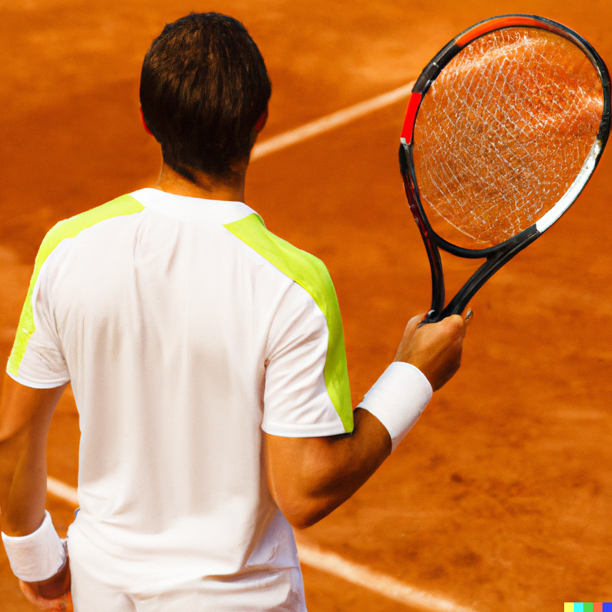

|  |
Tennis dates back to 12th century France when it was played in the form of a handball game called ‘paume’ or palm. The game involved hitting a ball back and forth by hand. In time, a black leather glove was used and then from there a handle was added to the glove, which formed the first racquet. The game was originally played by monks as a form of entertainment during ceremonial occasions. Monks all over Europe enjoyed playing the game of jeu de Paume during the 14th century. Over time, the game spread and evolved throughout Europe and beyond. Original tennis balls were crafted from wood, it wasn't until later that a cellulose material was used to make the balls bouncier. While most sports keep the scoring system simple, tennis.. not so much. It is believed that the scoring system comes from medieval France and that a clock face was used to indicate the scores. For every point scored, the hand was moved to the next quarter (15, 30, 45). The first player to reach 60 was the winner and the game ended. Although, this is a little confusing considering the scoring system is now 15, 30 and 40. One explanation for the discrepancy is that players had to win by two points, therefore the hand was moved to 40 and then 50 with the win coming on the hour. Another theory is that the scoring system was created in reference to the number of yards the ball traveled. Today's courts measure a standard 78 feet long, but in the early days courts were 90 yards long, with 45 yards per side. Each time a player scored, players moved 15-feet forward. The third point was scored with both players up at the net, and so the final point was made at 10 yards. |
Tennis, game in which two opposing players (singles) or pairs of players (doubles) use tautly strung rackets to hit a ball of specified size, weight, and bounce over a net on a rectangular court. Points are awarded to a player or team whenever the opponent fails to correctly return the ball within the prescribed dimensions of the court. Organized tennis is played according to rules sanctioned by the International Tennis Federation (ITF), the world governing body of the sport.